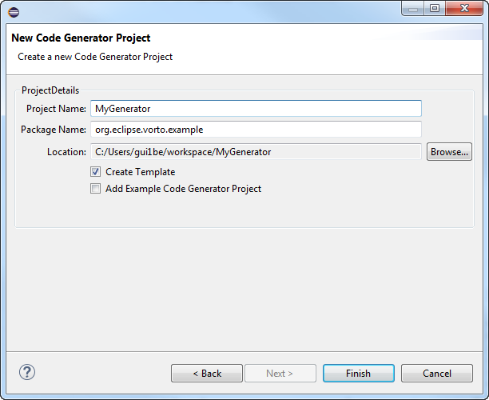
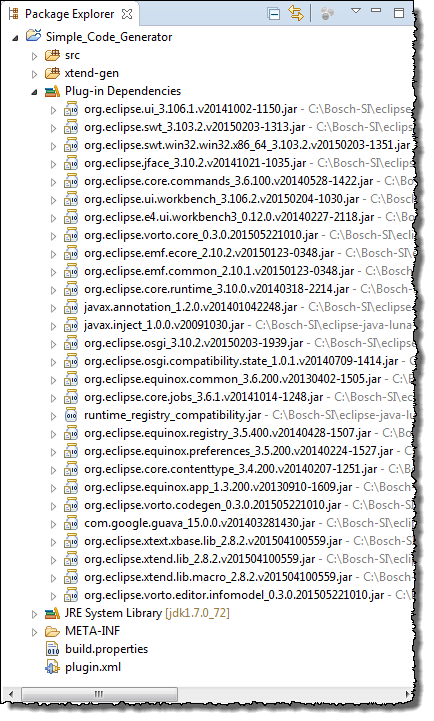

Creating a Code Generator Plug-in Project
Prerequisites
You have started Eclipse.
Proceed as follows
- In the main menu, click File > New > Project > Vorto > Code Generator Project.
The New Code Generator Project dialog opens. - In the field Project name, enter a project name, for example,
HelloWorldGenerator.
 - Click Finish.
The new plug-in project org.eclipse.vorto.example.helloworldgenerator is generated. All dependencies required by the new project, as well as default classes and configuration files are generated.
